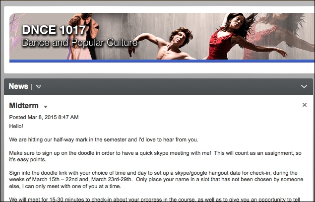
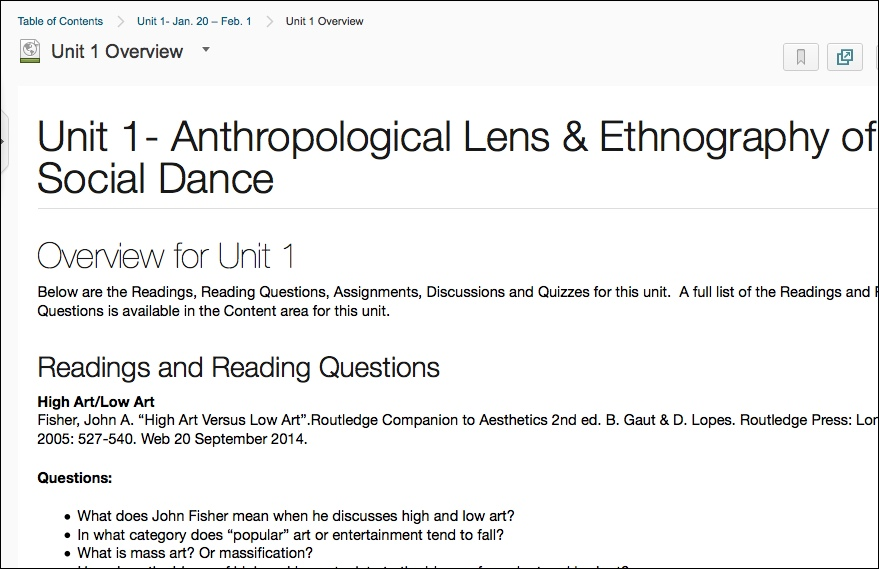
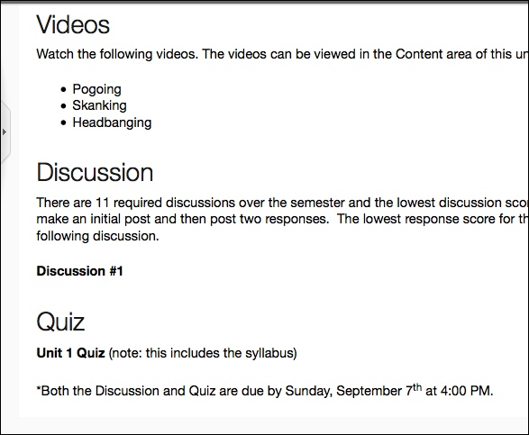
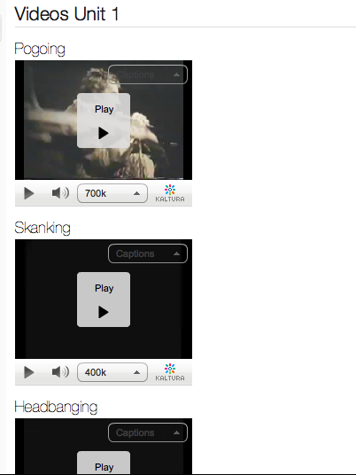

This project was the development of our first online dance course. During development and the first semester it was taught, the instructor was in Montana in a dance troupe, in the Boulder area, and then she moved to New York City.
The course was developed to be inline with the face-to-face version of this course and includes videos of different dance styles.

An important factor of this course was consistency between units. When courses have a lot of content and have an intense pace, it is important for content to have a consistent layout so students know what to expect and they can plan how to complete the required assignments.

The overview page explained the content that would be included in each unit. Each unit included videos, pdfs and threaded discussions and every assignment had due dates so students moved through the content at the same pace.

Videos were included in the content as demonstrations of different types of dance. Below are some of the videos included in unit 1.
